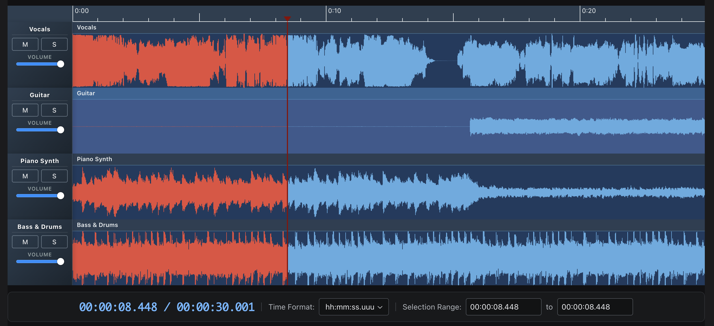

Waveform Playlist
React + Tone.js components for multi-track audio and MIDI in the browser. Canvas waveforms and spectrograms, cues, fades, effects, recording, annotations, AudioBuffer / WAV export. Also published as Web Components for framework-free embedding.